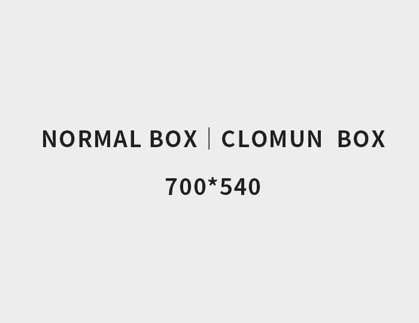
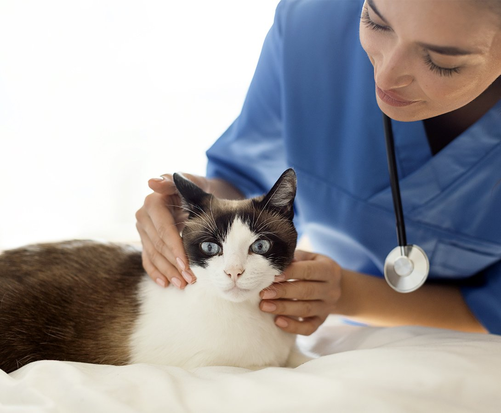
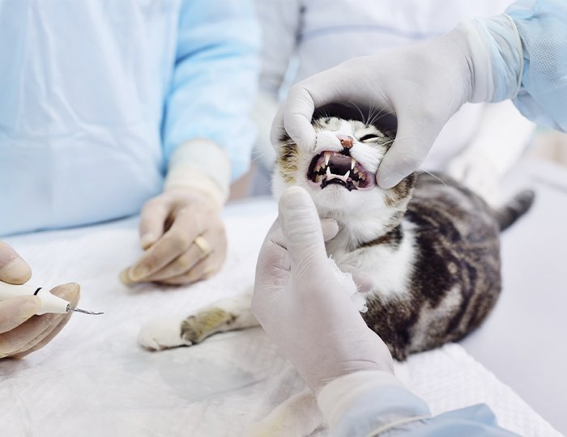
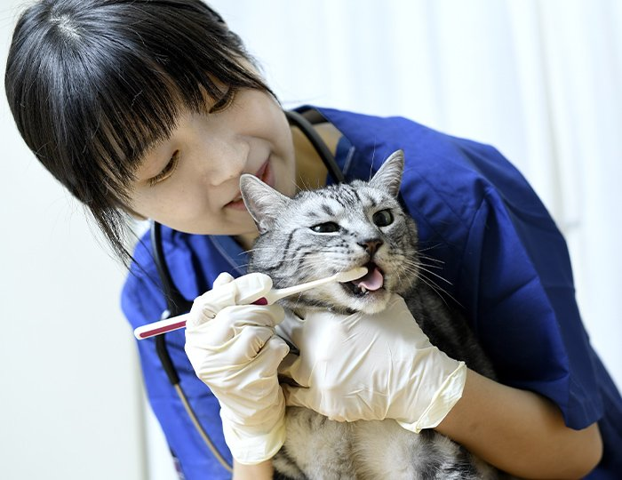

症例1


猫ちゃんの歯周病は、歯周病原細菌（歯周病を引き起こす口腔内細菌）です。歯垢（プラーク）の中に多く存在します。そのため、歯垢を長く口の中に留めないことが重要です。
人と同じようにデンタルケアによって口腔内の環境を清潔に保つことが大切です。また、口腔内の細菌が全身に影響をおよぼすこともあります。

猫ちゃんは口腔環境から歯石が形成されやすく、さらに柔らかいウェットフードは歯垢が溜まりやすいため、歯周病になりやすい環境にあります。
歯周病は若い猫ちゃんには起こらないと思うかもしれませんが、実は2〜3歳以上の猫ちゃんの約8割には歯周病があるという報告があり、若いうちから油断ができません。
※猫の外科手術のトップが歯石除去です。（アニコム家庭どうぶつ白書2019）
これらの症状があれば歯周病を疑いましょう。
外科手術の場合は、全身麻酔をしたうえで、歯石を除去するためのスケーリングを行ったり、重症化した歯の抜歯をしたりします。

症例1
症例2

歯周病はある程度予防ができる病気です。ご自宅でのデンタルケアと動物病院でプロのケアを受けましょう。そのためには、子猫の時期からの訓練が大切です。
幼いころからスキンシップの一環として、お口周りをさわることを取り入れましょう。お口周りを触ることに慣れてきたら、歯磨きシートでの歯磨きから始めてみることをおすすめします。
歯磨きが難しい場合は、デンタルグッズやおやつ、サプリメント、フードなどを活用してデンタルケアを行い、定期的に動物病院の獣医師にチェックしてもらうことで、健康な口内環境を保つことができます。
各院の診療時間・ご予約方法は、開院に向けて決定次第ご案内いたします。